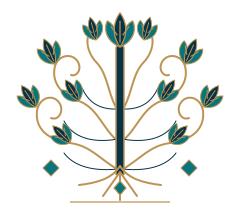
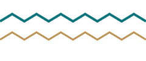
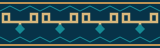
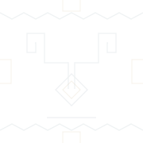
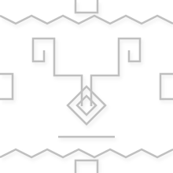
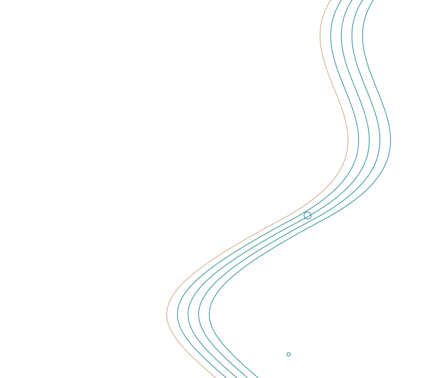
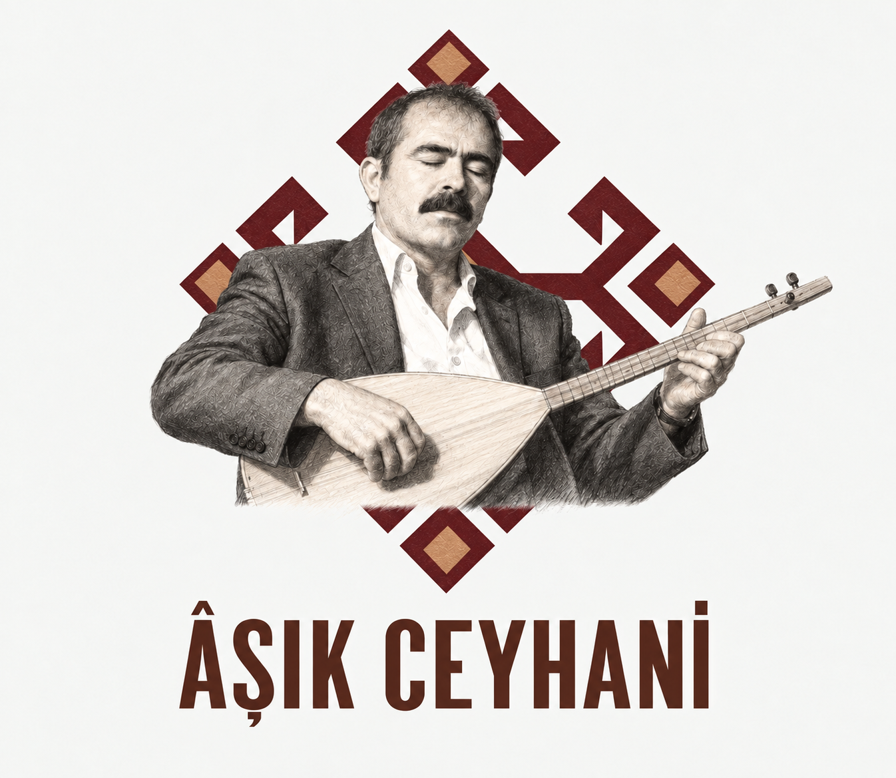

Geçmişten gelen izler, dijital dünyada yaşayan bir miras
Âşık Ceyhanî’nin dijital dünyadaki kimliği oluşturulurken yalnızca eserleri değil; yetiştiği coğrafya, bağlı olduğu âşıklık geleneği ve Türk kültürünün geçmişten günümüze taşıdığı görsel değerler de tasarımın bir parçası hâline getirilmiştir.
Sitede kullanılan renklerden motiflere, saz figüründen tipografiye, fotoğraflardan dekoratif ayrıntılara kadar her unsur; Âşık Ceyhanî’nin yaşamını, sanatını ve kültürel dünyasını yansıtacak biçimde ele alınmıştır.
Bu sitede Türk kültürünü, örf ve âdetlerini aslına bağlı kalarak yansıtmayı amaçlıyoruz. Anadolu halk kültürünün ve Yörük dokuma geleneğinin taşıdığı motifleri, kültürel anlamlarını gözeterek dijital dünyaya taşımaya çalışıyoruz. Aşağıda, bu görsel mirasın sitemizde yer alan öğelerini ve temsil ettikleri değerleri bulabilirsiniz.
Desenlerin temel öğeleri
Dokuma motifi
Koçboynuzu
Koçboynuzu, Anadolu dokumalarında güç, kahramanlık ve bereketle ilişkilendirilen bir motiftir. Kilimlerin orta alanlarında ve bordürlerinde kullanılır. Kültür Portalı’nda oku ↗
Bu sitede: Halk ozanının güçlü sesini ve kültürel mirasın sürmesini çağrıştırır. Şiir kartlarında, küçük süslemelerde ve tasarım imzasında yer alır.

Dokuma motifi
Hayat Ağacı
Hayat ağacı, farklı ağaç biçimleriyle ve farklı kültürel yorumlarla kullanılan köklü bir motiftir; dokuma, ahşap ve taş gibi çeşitli alanlarda görülür. Kültür Portalı’nda oku ↗
Bu sitede: Kökleri aileyi, dalları gelecek kuşakları temsil edecek şekilde yorumlanmıştır. Âşık Ceyhani’nin hatırası ve oğluyla devam eden sanat geleneğiyle bağ kurar. Üst başlığın arkasında hafif bir desen olarak kullanılır.
Bu sitede: Çengeli çağrıştıran köşeli dönüşler, koçboynuzu çizimi ve bordürlerin ritmini oluşturur. Buradaki örnek, bu çizgi dilini yakından göstermek için ayrılmış bir detaydır; tek ve değişmez bir tarihî anlam yüklenmemiştir.

Desen bileşeni
Su Yolunu Çağrıştıran Zikzak
Bordürlerin kenarında, kesintisiz ilerleyen köşeli bir çizgi kullanılmıştır. Bu tasarımda su yolu fikrini çağrıştırır; belirli bir yöreye ait dokuma örneğinin kopyası olarak sunulmaz.
Bu sitede: Yaşamın akışını ve bir kuşaktan diğerine aktarılan hatıraları anlatmak için seçilmiştir. Üst ve alt şeritlerde, ayrıca hafif arka plan deseninde görülebilir.
Halk müziği simgesi
Bağlama / Saz
Saz, âşıklık geleneğinde şiirle müziği bir araya getiren temel çalgıdır. UNESCO’nun âşıklık geleneği açıklamasında da ozanların saz eşliğinde icrasına yer verilir. UNESCO’da oku ↗
Bu sitede: Âşık Ceyhani’nin sanatını doğrudan temsil eder. Üstteki isim alanında, müzik çalarda ve beğeni sonrası görülen saz animasyonunda bu çalgıdan esinlenen çizimler yer alır.
Türk topluluklarının kamlık geleneğinde davul, törenlere ritim veren ve kamın manevi yolculuğuyla ilişkilendirilen bir çalgıdır. İnanç anlatılarında davulun bir binek, tokmağın ise kamçı gibi düşünüldüğü örnekler vardır. Davul üzerindeki gök cisimleri, ağaç ve hayvan tasvirleri de Türk mitolojisinin ve tabiatla kurulan ilişkinin izlerini taşır.
Bu sitede: Türküler bölümündeki müzik çaların arkasında, tek renkli ve saydam turkuaz çizgilerle kullanılır. Daire, dikey eksen, gök cisimleri ve figürler; ritmi, tabiatı ve kültürel hafızayı çağrıştıran çağdaş bir tasarım yorumu oluşturur.
Sitedeki çizim, daha önce paylaşılan kam davulu örneklerinden esinlenerek hazırlanmıştır; bu sayfadaki görünümde ayrıntıları okuyabilmek için çizgiler belirginleştirilmiştir.
Bu öğelerden oluşan site desenleri

Birleşik desen
Kilim Bordürü
Koçboynuzunu çağrıştıran çizgiler, küçük baklava biçimleri ve zikzak kenarlar yan yana getirilmiştir. Bu, site için oluşturulmuş bir bordür düzenidir.
Bu sitede: Sayfanın üst ve alt alanlarını çerçeveler. Dokuma kenarlarının düzenli tekrarını kullanarak bölümler arasında görsel bütünlük sağlar.
Birleşik desen
Kilim Esintili Ayraç
Koçboynuzu çizgisinin küçük bir yorumu, ince yatay çizgiler ve baklava biçimleriyle birleştirilmiştir.
Bu sitede: Başlıkları ve şiir alıntılarını nazikçe ayırır. Açılış penceresinde de kullanılır.

Birleşik desen
Hafif Dokuma Zemini
Koçboynuzu benzeri köşeli çizgiler, baklava biçimleri ve zikzaklar tekrarlanan bir desen içinde bir araya gelir. Baklava biçimleri burada geometrik dolgu olarak kullanılır.
Bu sitede: Ana arka plana dokuma hissi verir. Düşük görünürlükle kullanılması, yazıların ve fotoğrafların öne çıkmasını sağlar.

Renk uyarlaması
Alt Alanın Dokuma Deseni
Hafif dokuma zemininin turkuaz arka plan için hazırlanmış açık renkli uyarlamasıdır. Ayrı bir tarihî motif değildir.
Bu sitede: Alt alanın rengini koruyarak koçboynuzu ve zikzak tekrarlarını görünür kılar. Sayfanın başlangıcıyla sonu arasında aynı görsel dili sürdürür.

Dış arka plan deseni
Siyah Beyaz Dokuma Zemini
Koçboynuzunu çağrıştıran köşeli çizgiler, baklava biçimleri ve zikzaklar siyah ve beyaz tonlarla bir araya getirilmiştir. Beyaz çizgilerin hafifçe kaydırılması ve koyu çizgilere eklenen gölge, desene kabartma hissi verir. Anadolu dokumalarından esinlenen bu düzen, sitedeki motiflerin görsel dilini sürdürür.
Bu sitede: En dıştaki koyu krem zeminde tekrar ederek sayfanın sağ ve sol kenarlarını tamamlar. Renkli fotoğraflar ve turkuaz ayrıntılarla birlikte, merkezdeki içeriği öne çıkaran sakin bir çerçeve oluşturur.
Sitedeki diğer görsel izler
Motifin renk uyarlaması
Canlı Turkuaz Koçboynuzu
Koçboynuzu çiziminin turkuaz ve açık mavi tonlarla hazırlanmış uyarlamasıdır. Aynı motif, farklı bir renk düzeniyle sitenin görsel diline katılır.
Bu sitede: Videolar sayfasındaki “Yörük Obalarımız” belgeselinin açıklama alanında, arka plana saydam biçimde yerleştirilir. Sanatçının logosundaki geometrik çizgilerle belgesel alanı arasında bağ kurar.

Çağdaş çizgi bezemesi
Saz Tellerinden Esinlenen Çizgiler
Yan yana ilerleyen kıvrımlı çizgiler, sazın telleri ve sesin yayılması düşüncesinden esinlenir. Bu bezeme, site için hazırlanmış güncel bir çizgi düzenidir.
Bu sitede: Ziyaretçi defterinde ve türkü yorumlarının arka planında hafif bir doku oluşturur. Okumayı ve yazmayı zorlaştırmayan düşük görünürlükle kullanılır.
Millî simgeler
Ay-Yıldız ve Atatürk Flaması
Ay-yıldızlı Türk bayrağı ve Atatürk portreli flama, bu tasarımda millî aidiyeti ve Cumhuriyet’e bağlılığı ifade etmek için kullanılır.
Bu sitede: Flama üst başlıkta yer alır. Türk bayrağı, alt alanda ve bilgisayarda menü bağlantılarıyla ana sayfa düğmelerinin üzerine gelindiğinde beliren saydam desende kullanılır.

SANATININ VE HATIRASININ SİMGESİ
Âşık Ceyhanî Logosu
Orkun Sayıcı tarafından hazırlanan bu logo, Âşık Ceyhanî’nin sazıyla bütünleşen portresini merkeze alır. Portre onun hatırasını, elindeki bağlama ise şiirini türküye dönüştüren sanatını ve âşıklık geleneğini temsil eder.
Portrenin arkasındaki köşeli, simetrik çizgiler; Anadolu kilimlerinin geometrik desenlerini ve koçboynuzunu çağrıştıran biçimleriyle sanatçının kültürel kökleriyle bağ kurar. Bordo, toprak ve altın tonları bu tasarımda sıcaklığı ve geçmişten gelen mirası hissettirmek için bir araya gelir.
Alt bölümdeki güçlü “ÂŞIK CEYHANİ” yazısı, ozanın adını görselin ayrılmaz bir parçası hâline getirir. Portre, saz ve dokuma esintili desenler birlikte; bir ömrün sesini, sözünü ve hatırasını taşıyan bir kimlik oluşturur.
Lacivert: Anadolu dokumalarından dijital tasarıma
Lacivert, Anadolu halı ve kilimlerinde kullanılan renklerden biridir. Yağcıbedir halılarında ana renkler arasında yer alır; lacivert zemin üzerinde beyaz çizgiler ve bordürler görülür. Akçadağ halılarında ise kırmızıyla birlikte sıkça kullanılır. Böylece kimi dokumalarda zemini oluşturur, kimilerinde diğer renklerle birlikte desenin renk düzenine katılır. Yağcıbedir El Halısı — Kültür Portalı ↗Akçadağ Halısı — Kültür Portalı ↗
Bu sitede: Lacivert, başlıklarda ve motiflerin ana çizgilerinde kullanılarak okunaklılığı güçlendirir. Turkuaz, krem ve altın tonlarıyla birlikte Anadolu dokumalarının koyu zemin ve açık desen birlikteliğini hatırlatır.
Turkuaz: Çini sanatından gelen bir renk
Mavi ile yeşil arasında yer alan turkuaz, Türk çini sanatının renk dünyasında önemli bir yere sahiptir. İznik çinilerinde firuze ve turkuaz tonları, beyaz zemin ve diğer canlı renklerle birlikte kullanılır. İznik Çinisi — Kültür Portalı ↗
Bu sitede: Turkuaz; düğmelerde, bağlantı vurgularında ve dokuma desenlerinin ayrıntılarında kullanılır. Lacivert, krem ve altın tonlarıyla bir araya gelerek geleneksel bezeme dilini bugünün ekranlarına taşır. Bu tasarımda ferahlığı, canlılığı ve hatıraların yaşamaya devam etmesini çağrıştırmak için seçilmiştir.
Göktürk / Orhun Alfabesinden Esinlenen Yazı Bezemesi
Orkun Sayıcı adının altındaki yazı esintili bezeme
Göktürk ya da Orhun alfabesi, Türkçenin tarihî yazı sistemlerinden biridir. Orhun Yazıtları bu yazıyla oluşturulmuştur. Harflerin dik ve köşeli çizgileri, sitedeki geometrik motiflerle görsel bir bağ kurar. Eski Türk Yazıtları: Dil, Tarih ve Kültür — Türk Dil Kurumu ↗
Bu sitede: Sayfanın altındaki “Orkun Sayıcı” imzasına eşlik eden şerit, Türk yazı mirasına bir gönderme olarak kullanılır. Babasının hatırasını yaşatan bu çalışmanın, dil ve kültürün kuşaklar boyunca aktarılmasıyla kurduğu bağı görünür kılar.
Mevcut şerit, Orhun yazısının çizgi dilinden esinlenen çağdaş bir süslemedir; “Orkun Sayıcı” adının Göktürk alfabesiyle yazımı ya da tarihî bir yazıttan alınmış metin olarak okunmamalıdır.
Bir Hatırayı Yaşatmak, Bir Mirası Geleceğe Taşımak
Bu site, Orkun Sayıcı tarafından babası Âşık Ceyhanî’nin anısını yaşatmak; şiirlerini, türkülerini ve onunla paylaşılan hatıraları bir araya getirerek gelecek kuşaklara aktarmak amacıyla hazırlanmıştır. Aynı zamanda Orkun Sayıcı’nın yüksek lisans projesidir. Kişisel bir hatırayı koruma isteği ile akademik çalışmasını bir araya getiren bu proje, âşıklık geleneğinin dijital dünyada yaşatılmasına katkı sunmayı amaçlar.